Total Solar Eclipse 2017 USA
Warning: Staring directly at the Sun (except the totality) without a solar filter is dangerous. Do not do that.
Place, time
August 21st, 2017. Observation point at Beatrice, NE, USA. The nearby national park (Homestead National Monument of America) was very well prepared, thousands of people observed the eclipse here (Bill Nye was the star guest). A separate area was provided for telescope users, so we didn't have to worry about the tripod.
{kind=link}
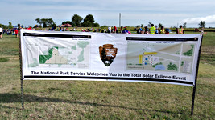
{kind=link}
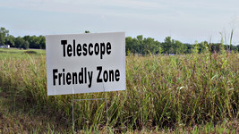
{kind=link}
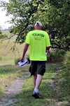
The GPS coordinates of the observation point: 40.28543 N, 96.83085 W.
A detailed map (created by Xavier M. Jubier) can be found here.
Pickrell, NE was our plan B.
Equipment
Most of the pictures were taken using the following equipment:- Tripod: EQ-3. I was using water bottles for counterweight. Using an equatorial mount is much more convenient compared to the standard photography tripod I was using at my previous solar eclipse observation (Turkey 2006). The disassembled tripod just fits my baggage (Actually I bought my baggage specially for this tripod).
- Telescope: SkyWatcher Maksutov-Cassegrain 102/1300.
- Instead of the factory finder scope I was using a homemade solar finder.
- Camera: Pentax K-70 (APS-C DSLR)
- I've attached my telescope to the camera using a T2 lens mount adapter for Pentax K mount (similar adapters are available for other camera brands as well). I was using the telescope as a 1300mm F/12.7 lens. The diameter of the Sun's image is 12mm on the sensor (as expected). This is quite close to the size of the APS-C sensor (23.6 x 15.8 mm).
- Filter: Baader Astrosolar OD 3.8.
- I was using a wired remote control (JJC TM-PK1) to avoid shaking the tripod.
- I bought a replacement battery for the camera, I've tested it beforehand to see how well it handles the load. It is always advised to use brand new (or fully charged) batteries, and should always have replacement batteries.
- Unfortunately the rain cover plastic bag also became an important part of the equipment.
{kind=link}
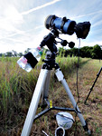
{kind=link}
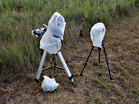
I was using the android Eclipse Calculator 2 app for contact time calculations. This program uses the GPS of the phone to calculate the times. The program is very useful, especially if we don't know the exact observation point in advance.
Solar filter
We need a special filter for the solar photography (except the totality). I was using the filters I made for the 2016 eclipse since they were still in good condition.
The filters contain German Baader Astrosolar film, which I bought from the manufacturer. I had OD (=Optical Density) 5.0 and OD 3.8 films, but I was only using OD 3.8. The OD 3.8 filter reduces the light intensity to 1/6309 (103.8 = 6309).
The filters were created using the method described in this youtube video:
{kind=link}
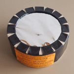
{kind=link}
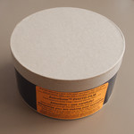
{kind=link}
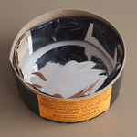
{kind=link}
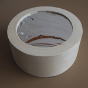
{kind=link}
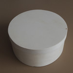
{kind=link}
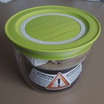
Please note the very nice warning stickers. I store my fragile filters in plastic food containers.
Partial
{kind=link}
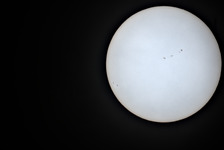
{kind=link}
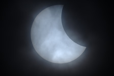
{kind=link}
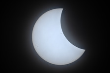
{kind=link}
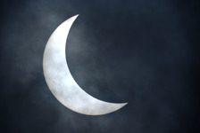
{kind=link}
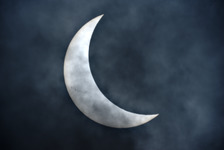
{kind=link}
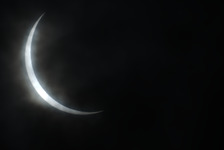
{kind=link}
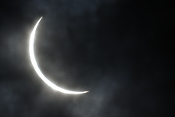
{kind=link}
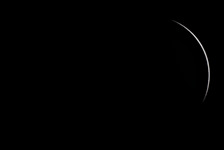
{kind=link}
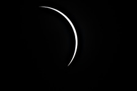
{kind=link}
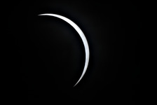
{kind=link}
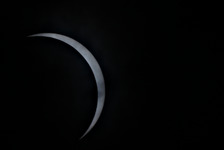
{kind=link}
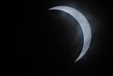
{kind=link}
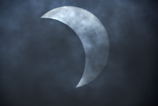
{kind=link}
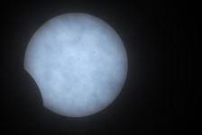
Originally I wanted to use OD 3.8 filter, ISO 100 and 1/1250 exposure time, the first image (taken about 1 hour before the first contact) shows this setting. As there were more and more clouds, I switched to more sensitive ISO and longer exposure times.
When the cloud layer became thicker, I also photographed without filter, mostly using ISO 100, 1/6000 settings.
There were periods when nothing was visible because of the clouds. It's not much better when because of the cloud thickness without filter there's too much light, with filter there's too little light.
Because of the continuously changing light conditions many bad images
were taken, the overexposed ones are hopeless, the underexposed ones are
usable. Most of the above images also had to be digitally corrected (imagemagick: convert -auto-level).
Because of the apparent motion of the Sun I had to reposition my camera again and again after a few minutes. It is very easy using an EQ tripod, but the size of the APS-C sensor is quite small so I had to reposition very often. The clouds sometimes made it necessary to find the Sun again, the homemade solar finder worked very well.
The filter modifies the color of the Sun, I processed the RAW files to make the Sun white (ufraw-batch
--temperature=5500 --green=1.3). For images taken without filter I had to use a different green value (ufraw-batch
--temperature=5500 --green=1.0). The color difference also helps (besides exposure time, ISO) to determine afterwards,
whether an image was taken with filter or not.
Totality, solar corona
{kind=link}
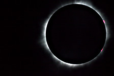
{kind=link}
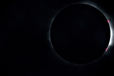
{kind=link}
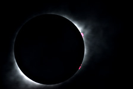
{kind=link}
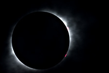
{kind=link}
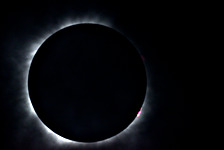
The pictures show the corona, but only a smaller part of it because of the APS-C sensor (compared to my previous images using the same telescope and a 35mm film camera).
I was using the same equipment without the filter this time.
I created an exposure series with ⅓ stop increments from 1/6000 second to 1/8 second with two different ISO values: ISO 100 and ISO 1000. The images became terribly underexposed, I don't understand why I didn't switch to higher ISO values because of the clouds. The advantage of underexposure however, is that the protuberances (the pink spots) are more visible.
The camera's 5-image exposure bracket is very useful, so the 30 images of the series can be taken with 6 exposures.
The basically almost completely black images
enhanced with imagemagick (convert -contrast-stretch
60%x0.05%) can recover quite a lot of detail. Because of the 4-5
stop brightening the images are quite noisy.
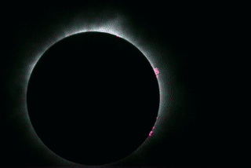
I also created a sequence with identical settings, from which this unnecessary animated gif was made. I should have made more than 7 images, of course it might have been much simpler to make a video.
I also tried to enhance the images using my script similar to the Pellett method, but the script didn't work properly with the underexposed images.
Baily's Beads
As we approach the totality the irregularities of the lunar limb allows the Sun to shine through in same places (valleys) and not in other places (mountains) which creates an effect called Baily's beads (named after Francis Baily).
{kind=link}
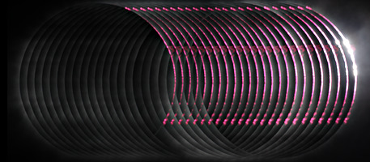
There is no need to use filter for these images. I was using ISO 1000 and 1/250 exposure time. I was using continuous shooting, the third contact's 24 images were taken in 12 seconds. Of course the image above is composed digitally.
It is possible to calculate the exact time for the second and third contact but it is still a bit difficult to catch the moment. Of course we can take lots of images using a DSLR, if the Sun doesn't move out of the frame, there won't be a problem. The sequence has the additional advantage that the rapid change of the image is very nicely visible. Analyzing the images shows that I photographed too early, before the moment of contact the camera's buffer filled up, so the sequence slowed down.
There are two attempts, the second contact images became unusable because of the clouds.
These images show most clearly that I didn't completely succeed in adjusting the telescope's focus, the thick cloud layer didn't help either.
Diamond ring
{kind=link}
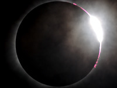
I managed to photograph the diamond ring at the third contact. The setting was the same as for the Baily images: ISO 1000, 1/250. The clouds didn't help here either, and the Sun almost moved out of the frame.
Without tripod
What picture could you make without a tripod? ( Unbelievable, there are people who want to travel without tripod(s) and telescope(s). ) The first image was taken during the partial phase, the second during totality, handheld with a small Pentax Q-S1 camera with basic zoom lens. The picture was taken by my girlfriend who was a very useful helper during the eclipse.
The first image shows especially well the many clouds, but with some searching the Sun can be found.
{kind=link}
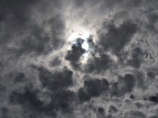
ISO 200, f4.5, 1/500
{kind=link}
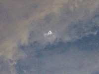
ISO 12800, f4.5, 1/50